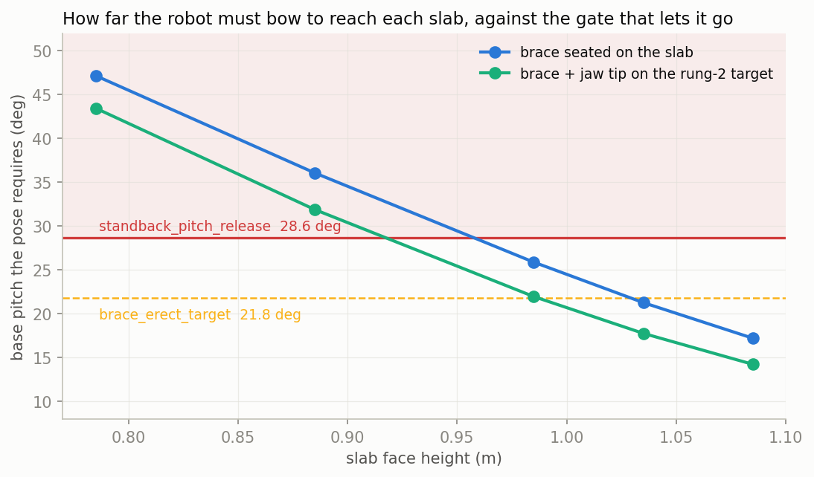
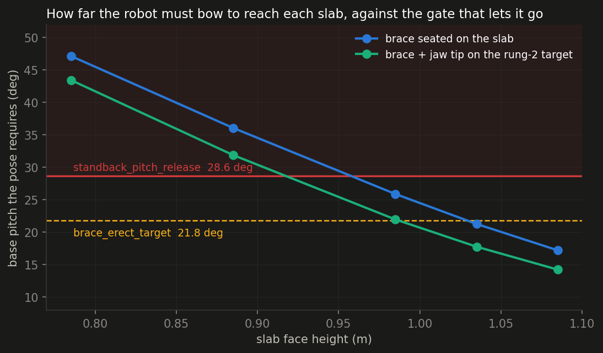
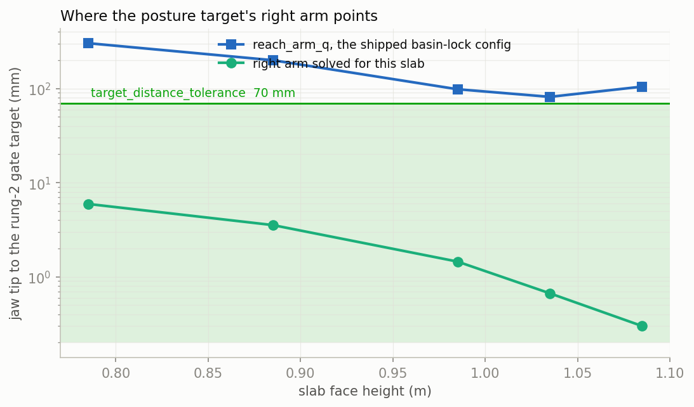
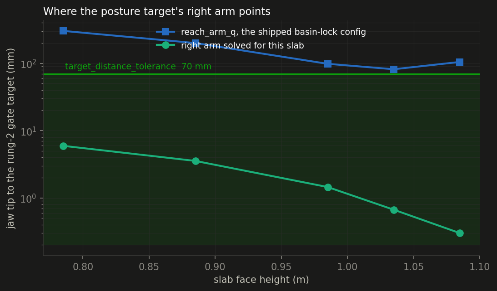
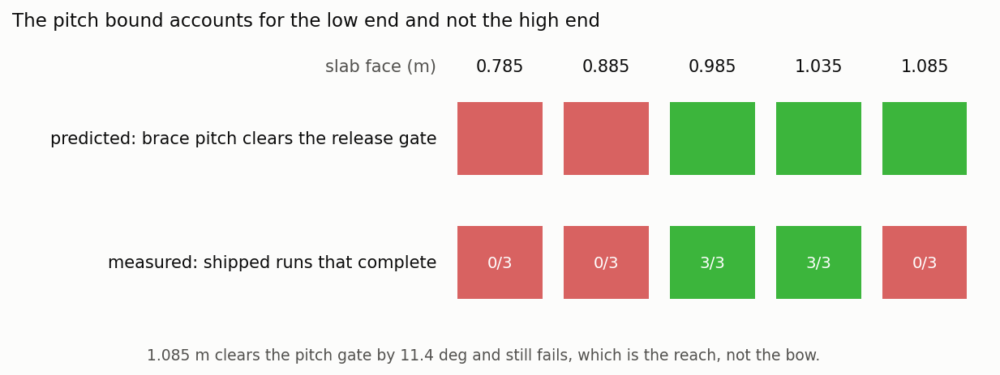
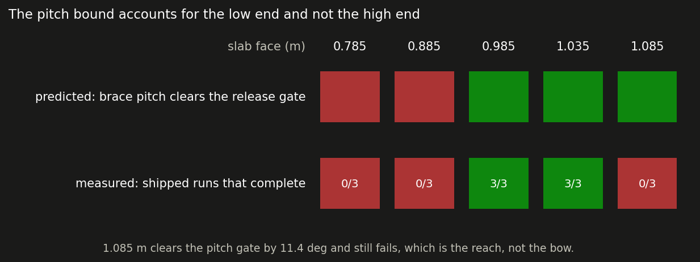

The shipped controller braces on a slab from 0.985 m to 1.035 m and fails outside it. Two constants in lean.cc, both fitted at the compiled 0.985 m face and neither tracking the slab, bound that window at opposite ends: the release pitch gate at the low end, the rung-2 posture target at the high end.
The baseline sweep measured the shipped controller over slab height and changed nothing. The posture retarget re-solved the brace keyframe for each slab and found the proximate blocker: rung 2 of the ladder carries reach_target_table [0.55, 0.04, 0.15], and every run whose right jaw tip came within the 70 mm target_distance_tolerance of that point completed the ladder while every run that did not, failed. Four changes moved real mechanism and none widened the window.
This page asks why that gate is missed, and finds two different answers at the two ends. Minimal is still counted in numbers touched: an existing model numeric beats a new weight, a weight beats a new residual, a new residual beats moving the robot. A result counts only if it widens the window on 3 seeds per height at a fixed thread count and costs no completions at 0.985 m.
Putting the forearm on a lower slab requires a deeper bow. Solving for the pose each slab needs — both brace pads on the face, both feet exactly where the keyframe plants them — and reading base pitch the way lean.cc reads it, off the free-joint quaternion, gives the requirement in the same frame as the gate that grades it. standback_pitch_release is 0.50 rad (28.6°): rung 3 will not let go of the table above it.
| slab face | brace pose pitch | reach pose pitch | margin to the release gate | shipped runs complete |
|---|---|---|---|---|
| 0.785 m | 47.1° | 43.4° | -18.5° | 0/3 |
| 0.885 m | 36.1° | 31.9° | -7.4° | 0/3 |
| 0.985 m | 25.9° | 22.0° | +2.8° | 3/3 |
| 1.035 m | 21.3° | 17.8° | +7.4° | 2/3 |
| 1.085 m | 17.2° | 14.2° | +11.4° | 0/3 |
The sign of the margin separates the low failures from the working window exactly. At 0.885 m the pose needs 36.1° and the gate is 28.6°; at 0.785 m it needs 47.1°. A run at either height cannot leave the brace rung without first un-bowing past the pose that is holding it on the table. At 0.985 m the requirement clears the gate by 2.8°, which is the whole margin the working height has.


The runs bear the direction out. Replaying the logged qpos, peak base pitch is 74.9° at 0.785 m and 44.8° at 0.885 m against the 47.1° and 36.1° the poses require — the robot overshoots the bow at the low end — and 12.6° at 1.085 m against a required 17.2°, so at the high end it never commits far enough forward to load the pads at all.
The requirement crosses the gate at 0.958 m. That is a prediction of where the window's lower edge sits, and it is testable: nothing between 0.885 m and 0.985 m has been run under any arm, so the edge is currently bounded by the sweep grid rather than measured. Three seeds each at 0.905, 0.935, 0.955 and 0.975 m put a number on it. The bound is refuted if 0.905 m completes.
The rung-2 target could have been outside the arm. It is not. Seat both brace pads on the slab, plant both feet, and solve for the demanded waypoint over a grid from 0.30 to 0.75 m in from the near edge and 0 to 0.30 m above the face: every cell lands within a millimetre at every height from 0.785 m to 1.085 m, with the pads holding to 0.06 mm and the feet to 0.01 mm. The shipped cell (0.55, 0.15) solves to 0.0 mm at 1.085 m.
So the 176 mm the gate measures at 1.085 m is not a reach limit. lean.cc already names what it is:
Posture (idx 27..33 = right arm) is tracking the brace-UP keyframe here, so it actively fights Reach DOWN.
That comment sits above reach_arm_posture, a basin lock that overwrites the seven right-arm entries of the posture target with the config reach_arm_q on any rung carrying a reach target whose hover is below reach_arm_hgate. Lean_H12_Magpie.xml sets that gate to 0.16 and strategy 25's rung 2 hovers at 0.15, so the lock is already aimed at the rung the height sweep dies on. It ships at 0.0 — off.
| slab face | as shipped, measured in the runs | reach_arm_q | right arm solved for this slab |
|---|---|---|---|
| 0.785 m | 375 mm | 303 mm | 6 mm |
| 0.885 m | 198 mm | 200 mm | 4 mm |
| 0.985 m | 19 mm | 98 mm | 1 mm |
| 1.035 m | 61 mm | 82 mm | 1 mm |
| 1.085 m | 167 mm | 105 mm | 0 mm |




Written into studies/table_height/sweep_basin.py before it was launched:
reach_arm_posture to 1 — one existing model numeric, no rebuild — completes at least one seed at 1.085 m, where pitch has 11.4° of margin and the reach is the only thing missing. It does nothing at 0.785 m or 0.885 m, where the release gate blocks the ladder regardless.reach_arm_posture plus brace_pose_track 1 does better at 1.085 m than either alone, because the shipped keyframe leaves the pads 100 mm under a 1.085 m slab and the lock cannot help an arm that is not braced.| slab face | shipped | reach_arm_posture | + brace_pose_track 1 |
|---|---|---|---|
| 0.785 m | 0/3 | 0/3 | 0/3 |
| 0.885 m | 0/3 | 0/3 | 0/3 |
| 0.985 m | 3/3 | 3/3 | 3/3 |
| 1.035 m | 2/3 | 2/3 | 0/3 |
| 1.085 m | 0/3 | 0/3 | 0/3 |
Both hypotheses are wrong, and the way they are wrong retires the family they came from. Replaying the jaw tip against the rung-2 gate at 1.085 m:
| arm at 1.085 m | closest to the gate | dx | dz |
|---|---|---|---|
| shipped | 154–176 mm | -136 | -82 |
| brace_pose_track 1 | 161 mm | -149 | -50 |
| reach_arm_posture | 167–185 mm | -138 | -92 |
| reach_arm_posture + brace_pose_track 1 | 162–167 mm | -126 | -103 |
The basin lock did not move the tip closer — 167 mm measured against 105 mm predicted offline — and no arm beats the shipped 154 mm. The offline probe evaluated reach_arm_q from a brace pose already seated on the slab; in the run the robot never seats it. Peak base pitch at 1.085 m is 12.6° against the 17.2° the pose requires.
x is short by 125–149 mm in every arm, whatever the right arm is told to do. Over the torso lever, 4.6° of missing pitch is about 72 mm of shoulder travel, and base x is a further 11 mm short of the 0.207 m the pose needs. The shoulder is in the wrong place, so a seven-joint arm cannot recover it: the high end is a trunk-commitment problem, not an arm problem.
Nothing stops the trunk. Required forward CoM at 1.085 m is +0.041 m against com_cap_fwd 0.145, required base x is 0.207 m against brace_lead_x0 0.24, and pitch has 11.4° of margin to the release gate. No cap binds; the lean is not being forbidden, it is not being asked. With brace_pose_track 1 the posture keyframe already commands 17.2°, so the next measurement is what the planner trades that against — Posture's weight against Brace Pos on the forearm_brace_lean rungs, read from the residual dump at 1.085 m. Both are weights in the strategy JSON; no rebuild.
reach_arm_posture alone is neutral: 3/3 at 0.985 m and 2/3 at 1.035 m, matching the shipped controller. Combining it with brace_pose_track 1 takes 1.035 m from 2/3 to 0/3, so the pair is disqualified by the rule that a change must cost no completions where the controller already works.standback_pitch_release at 0.63 rad and 0.785 m needs 0.82, against the shipped 0.50. Run 3 seeds at 0.885 m with --numeric standback_pitch_release=0.70. It is killed if the robot releases and faceplants: the gate would then be enforcing a real limit rather than a fitted one.reach_arm_q aims 82–105 mm off and a per-slab solve aims 0–6 mm off. If H1 lands, the follow-up is writing the solved seven joints into that numeric at transition time, gated behind brace_pose_track 3, and re-running 1.085 m.g_object_seq never advances without a tag bridge — so it needs the twin.